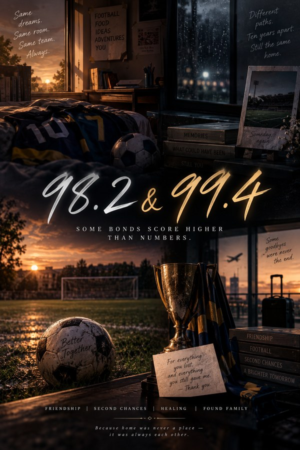

98.2 & 99.4
Two numbers. Two lives. One bond.
A story of friendship that becomes family, dreams that leave something missing, and ten years of distance
Read on WattpadOne came into his life through destiny. The other, he chose.
Sirharsh. Everyone calls him Shri. A brilliant, cheerful, ridiculously curious boy who believes life is meant to be explored, not conquered. He excels in academics, shines on the football field, experiments with everything that catches his attention, loves discovering new places and flavours, and finds a way to turn even the most serious situations into comedy. He doesn’t chase status. He doesn’t believe happiness needs an explanation. For Shri, life is simple: do what you love, learn what you need, leave what you don’t, and never let society decide how you should live.
Then there is Vidvaan. Older, disciplined, composed and relentlessly hardworking. Where Shri explores, Vidvaan masters. Where Shri follows instinct, Vidvaan calculates. Where Shri sees possibilities, Vidvaan searches for certainty. Two boys who couldn’t be more different. Yet somehow, they fit.
Vidvaan lost his family far too young, and finds something he never expected inside Shri’s home: a place where he is not treated like an orphan, not like a charity case, not like someone who owes anyone anything. Just as Vidvaan. And Shri never really understands why people call Vidvaan his best friend. To him, the answer is simpler. Vidvaan is family. And Shri intends to love both equally.
Their friendship grows through school corridors, football grounds, science labs, libraries, restaurants, ridiculous experiments, competitions, birthdays, arguments that never quite become arguments, and countless ordinary days that slowly become the most precious days of their lives. They laugh. They compete. They protect each other. They become each other’s safest place.
But dreams have a price. People have secrets. And sometimes the truth hides inside the very moments you thought you understood perfectly. Then one day, everything changes. Ten years pass. One returns carrying a life built far away. The other is still standing in the place where something inside him stopped moving. And when their paths cross again, the person Shri meets looks familiar enough to awaken every memory, yet different enough to make him question everything.
What happened during those ten years? What did each of them lose? What did they become? And how much can a friendship survive when two people remember the same past in completely different ways?
The difference between knowing someone and truly understanding them.
Meet them
- Sirharsh “Shri”. Cheerful, curious, football-mad. Turns any serious moment into comedy.
- Vidvaan. Older, disciplined, relentlessly hardworking. Lost his family too young, and found a home.
Sometimes the greatest distance between two people isn’t measured in kilometres. It’s measured in everything they never knew about each other. 98.2 & 99.4: two numbers, two lives, one bond.